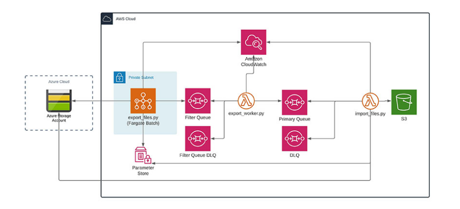

Cloud-to-cloud migration is not for the faint-hearted. But after a business merger or acquisition it’s sometimes a necessary step.
This post looks at our work for Zego, a provider of flexible insurance solutions for business vehicles. Zego has an established presence on AWS and following its acquisition of vehicle insurance telematics specialist Drivit, a cloud-to-cloud migration of Drivit’s Azure-hosted platform was initiated. Having all systems and applications on AWS was essential to maximise consistency and cohesion. However, as with any cloud-to-cloud migration, there were extreme technical complexities to contend with. We were appointed to handle the process.
Moving tens of millions of datafiles from Azure to AWS
One specific challenge centred on Drivit’s use of Azure Blob to receive and process data about driver habits. As part of the migration, this aspect of the platform was rewritten to make use of AWS S3 uploads which simplified data flow. However, around 45TB of existing datafiles also had to be moved to S3 to enable more cost-effective lifecycle management. The average file size was less than 1MB, and the sheer volume – tens of millions – meant that common tools such as AWS Snowballs or Rclone were not suitable for the task.
A partitioning-based approach
Traditional data transportation tools scan the source location before migration, then store the inventory in memory. However, with so many datafiles to move, there was a risk that memory consumption would overwhelm the system, resulting in failure.
We needed an alternative method for data discovery that could store the inventory outside of memory with minimal complexity.
Our initial solution involved a queue system which could scale to handle millions of files. As per the below architecture, we iterated over the Azure object store. Each datafile was published to the queue for the message to be collected, with the file move completed as an asynchronous process. Due to the long runtime of the object store scan, we used AWS Batch to run the ‘export_files.py’ process across the Fargate container platform.
This approach worked well in testing, but it was not fast enough in practice. Even with AWS Batch, the export_files.py process took many days to complete.
The task was analogous to trying to find a name in a phone book which is not structured alphabetically. You can start at the front of the book and work through the list name by name, but it will take a long time. That’s because it’s a single threaded process. By its nature it’s limited to a single CPU core, so increasing resource has no effect. What we needed was a multi-threaded process.
final solution
Ultimately, we devised a multi-processing solution using data partitioning. Drivit’s file naming convention involved unique user IDs, so we partitioned the entire dataset using a simple alpha-numeric scheme with 62 partitions (26 upper case letters, 26 lower case and ten digits). Based on this, we extended the export_files to make use of Python threads to increase throughput. We also took the opportunity to add a filter step to remove files from the processing queue once they were migrated. This was architected as follows:

The export_files.py AWS Batch job pushes messages to ‘filter queue’ which is read by the export_worker.py Lambda function. This checks whether the file is already there, with the message dumped or moved to the primary queue accordingly. Finally, import_files.py Lambda moves the file into S3.
Navigating cloud-to-cloud complexity
Cloud-to-cloud migrations are notoriously difficult to execute. Challenges like those outlined here are common, and it can sometimes feel like there’s no viable solution. However, we have the advantage of many years’ experience handling complex cloud migrations. Our tenacity and pragmatism enabled Zego to find an effective way forward, resulting in full migration of historic Drivit data to AWS